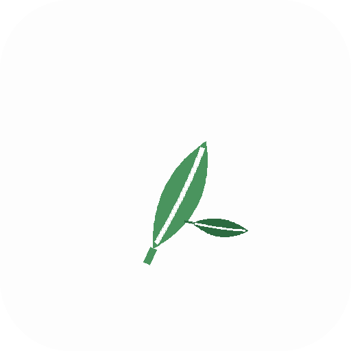

Shown at 144 / 96 / 48 px on light and dark backgrounds — launcher-realistic sizes.
One imperfect ink-brush circle. Rare, calm, unmistakably zen.
Your original idea, done deliberately. Friendly; but crowded territory.

The ensō with a leaf resting inside — identity plus your nature nod.
The existing pen-nib icon, for comparison.